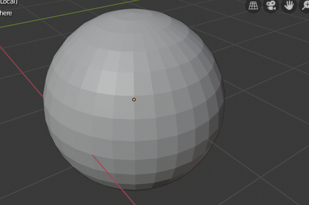

Contextual Views¶
The 3D View has several “contextual view” modes that can be set for a particular 3D View. These views can change how the overall 3D View looks or how you interact with objects.
View Global/Local¶
Reference
| Mode: | All modes |
|---|---|
| Menu: | |
| Hotkey: | NumpadSlash |
Global view shows all of the 3D objects in the scene. Local view isolates the selected object or objects, so that they are the only ones visible in the viewport. This is useful for working on objects that are obscured by other ones, or to speed up the viewport performance in heavy scenes.
You can toggle between Global and Local View by selecting the option from the View Menu or using the shortcut NumpadSlash.

Global View. |

Local View. |
{kind=link}
Note
These notes cover changes in local view which are not immediately obvious.
- 3D Cursor
- In local view the 3D cursor is not locked to the scene. Instead, each view has an independent cursor location.
- Layers
Local view bypasses layers, using only the selected objects when entering local view. Although new objects may be added while in local view.
It’s also possible to send objects out of local view, using , which can be useful to further isolate a selection.
- Rendered Shading
- While using rendered shading mode lights outside the local view are still used, this allows you to quickly render previews without having to remember to select all lights when entering local view.
Tip
Accidentally pressing NumpadSlash can happen rather often if you are new to Blender, so if a bunch of the objects in your scene seem to have mysteriously vanished, try turning off local view.
Remove from Local View¶
Reference
| Mode: | All modes |
|---|---|
| Menu: | |
| Hotkey: | M |
Objects can be removed from Local View by selecting them and using the Remove from Local View operator. This will move the selected object back to global view and all other objects will remain in local view. If the last remaining object is removed, the local view will be left empty and you will have to exit local view to see any objects.
Quad View¶
Reference
| Mode: | All modes |
|---|---|
| Menu: | |
| Panel: | |
| Hotkey: | Ctrl-Alt-Q |
Toggling Quad View will split the 3D View into four views: Three Orthographic “side views” and one Camera/User View. This view will allow you to instantly see your model from a number of view points. In this arrangement, you can zoom and pan each view independently but you cannot rotate the view.
Shortcuts for all views at once:
- View All Ctrl-Home
- View Selected Ctrl-NumpadPeriod
Note
Quad View is different from splitting the area and aligning the view manually. In Quad View, the four views are still part of a single 3D View. So they share the same display options and layers.

Quad View.
Options¶
These options can be found in .
- Lock
- If you want to be able to rotate each view, you can uncheck the Locked option.
- Box
- Syncs the view position between side views.
- Clip
- Clip objects based on what is visible in other side views.